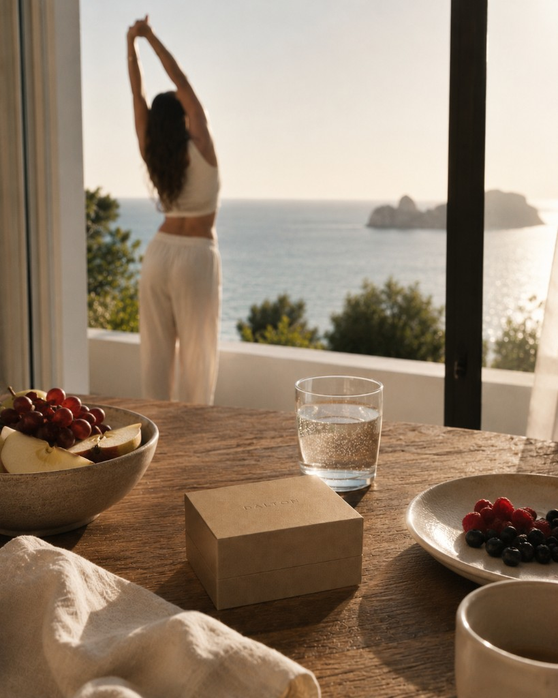
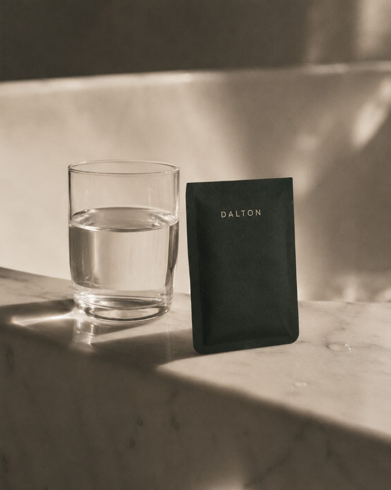
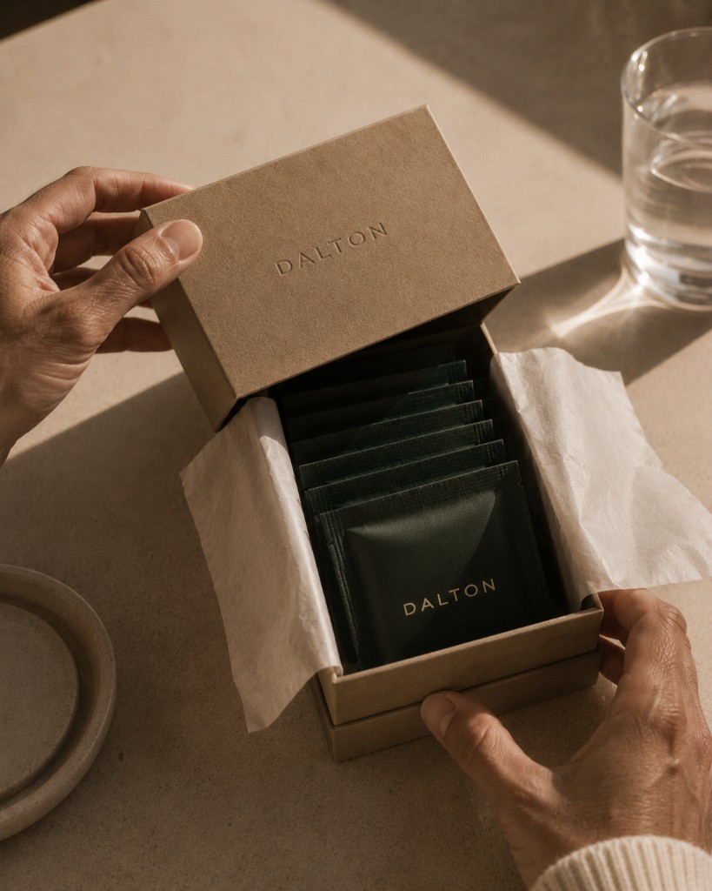
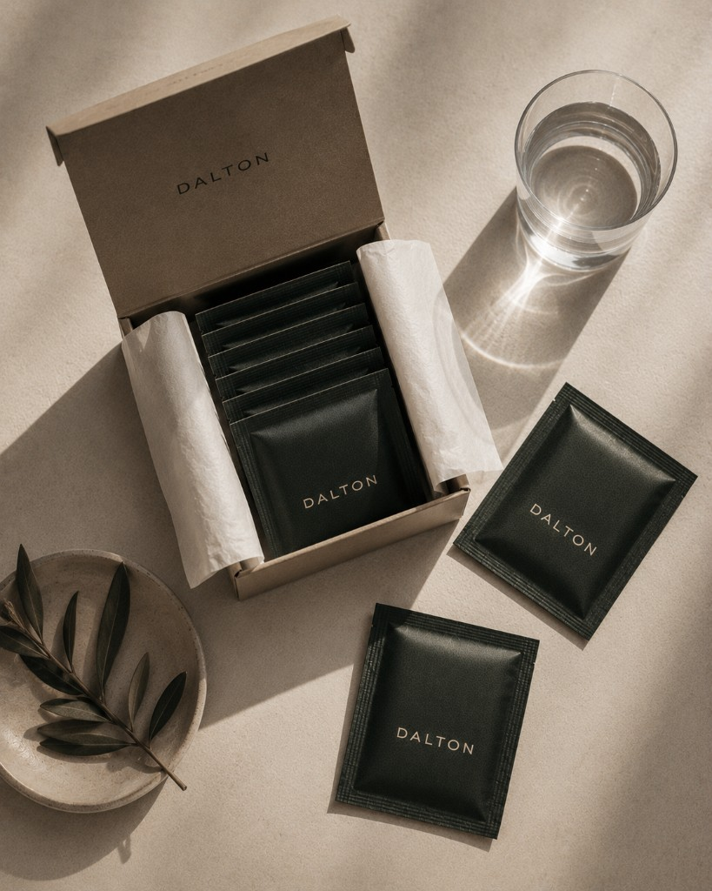
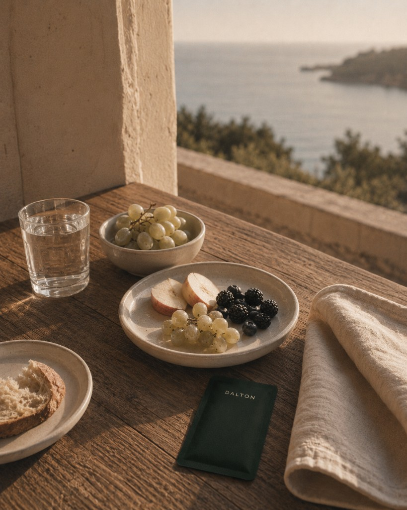
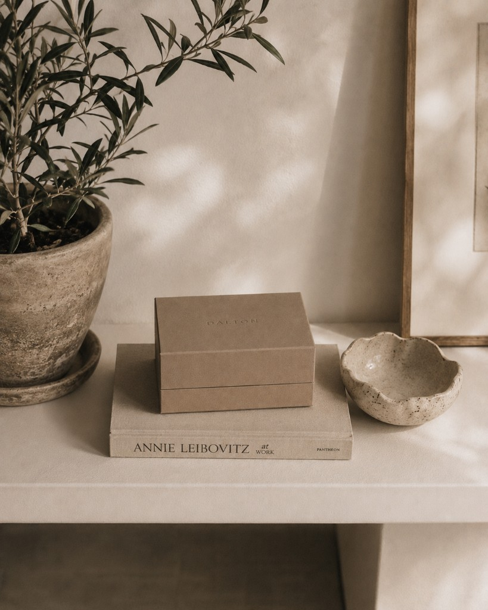

Rituel contemporain

Méditerranée
Pureté marine.
Pureté du corps.
Pureté du geste.
Le rituel compte plus que la promesse

L'objet
Compact, précieux, matte. Un objet que l'on garde visible — plus proche d'un soin ou d'une fragrance de niche que d'un produit de performance.
Un moment lent. Silencieux. Quotidien.
Le rituel
Le sachet. Le geste commence avant la première gorgée.
Dans l'eau claire. Lumière, verre, silence.
Chaque matin. La régularité est la transformation.
Le geste
Kraft tactile, tissu de soie, embossage discret. Chaque détail invite à prendre le temps.




« Je veux cet objet dans ma vie. »
Pureté marine · Pureté du geste
Conçu en France